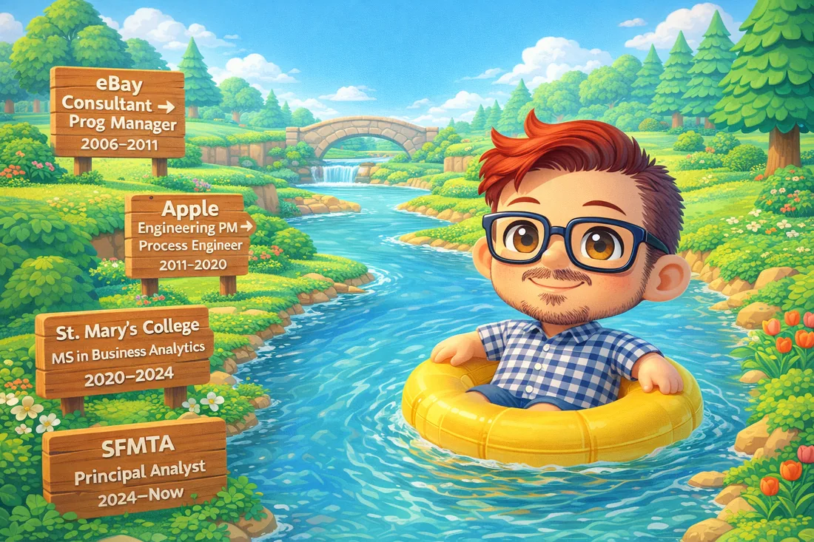
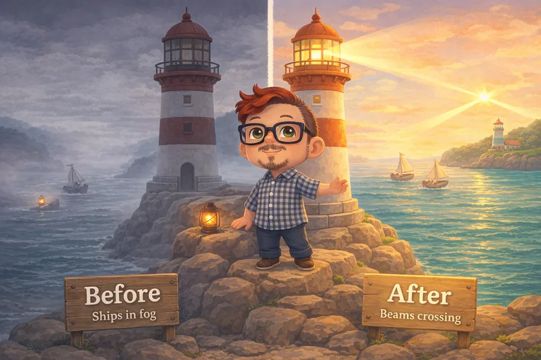
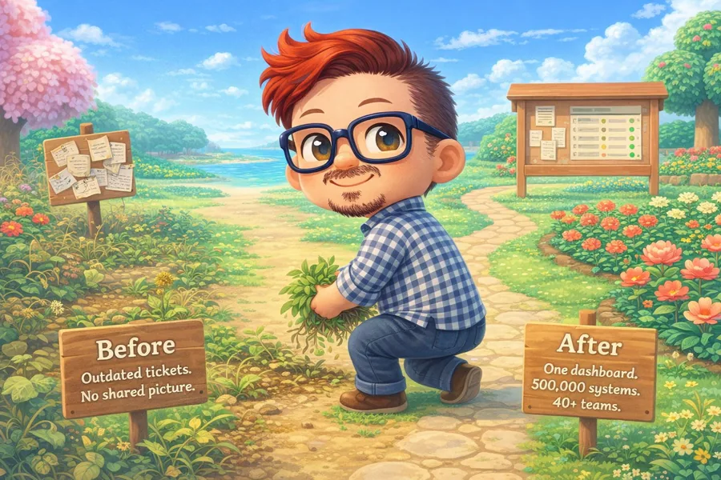

A Through-Line

Managing projects → solving org-wide problems → putting it all into public service.
Case Studies
eBay Site Security Program
eBay Marketplaces' Site Security team had the right people but no shared map. The work in progress was invisible, product teams couldn't easily tell when they needed a security review, and the group's way of working didn't scale. I built the map, smoothed out the intake, designed how the team showed up as partners, not obstacles — and opened a cross-company conversation with PayPal's security org.

Making iTunes' Crashes Countable
iTunes was crashing constantly, and my team — the site reliability engineers carrying the pagers — knew exactly why. New features kept shipping, bugs kept accruing, technical debt kept growing. We held post-mortems, but the results lived in Word documents nobody could aggregate or compare. Even the basic question, is downtime getting better or worse?, had no answer: every property measured it differently, every year measured it differently. Leadership kept prioritizing features over bug fixes because the conversation couldn't land on the bugs. The team knew. There was no data backing us up yet.

Kernel Updates for 500,000 Systems
At Apple, kernel-update tickets generated themselves by the hundred every day. The information that mattered lived inside spreadsheets attached to each ticket — outdated by the time anyone opened them, impossible to scan. Most managers had given up trying to act on them. Across 500,000 systems and 40+ engineering groups, the work was happening in the dark, and the people responsible for it were burnt out. I pulled on three threads at once.

Notes, Essays & Side Quests
Secret Gardens of San Francisco
Downtown San Francisco hides public gardens on its rooftops and inside its office towers — the kind you reach by walking past a security guard to an unmarked elevator. A coworker showed me my first; I've been tracking them down and mapping them ever since.
Explore the map →Conditional Probability for Normal Humans
If you test positive for malaria, how likely is it you actually have malaria? Many doctors get this wrong. Here's the intuition, without a single formula.
Read the explainer →Chasing Unicorns for Pride
In honor of Pride, I dug into Google searches for the word "unicorn." When were these searches most popular, where, and why? The answer surprised me.
Follow the search →